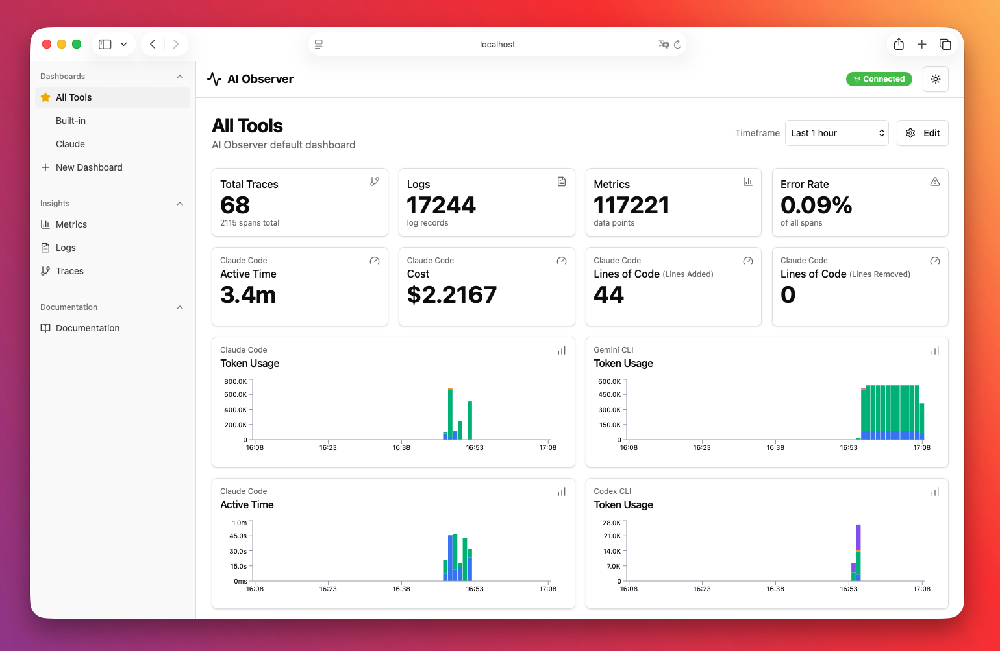
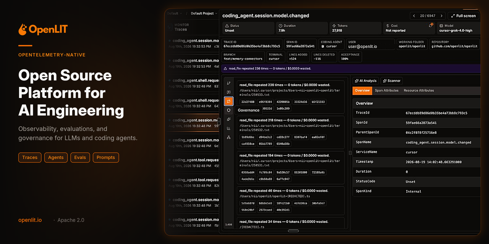
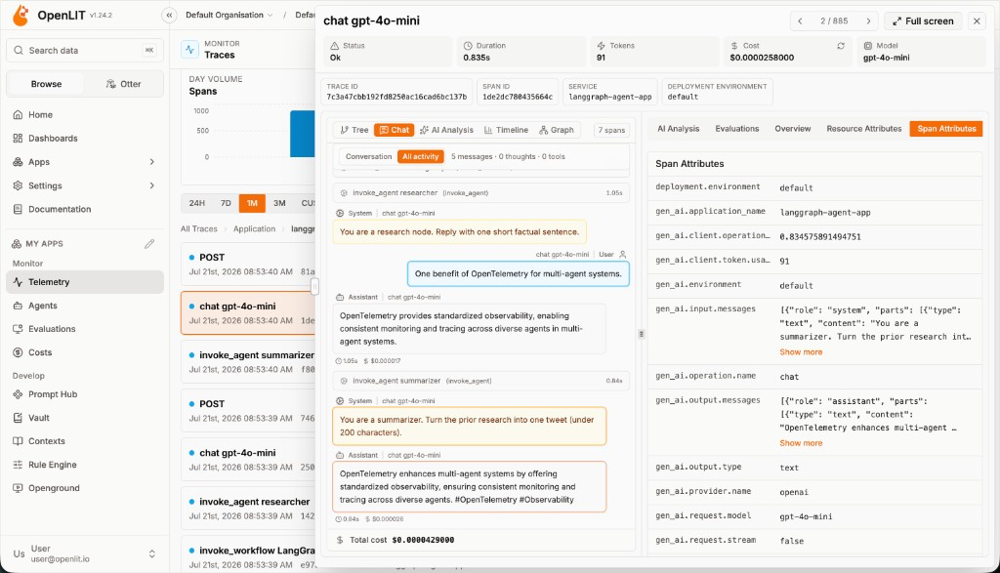
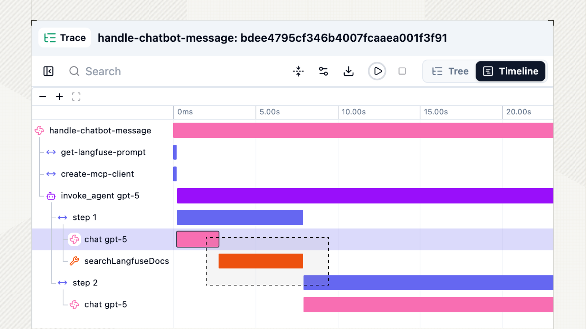
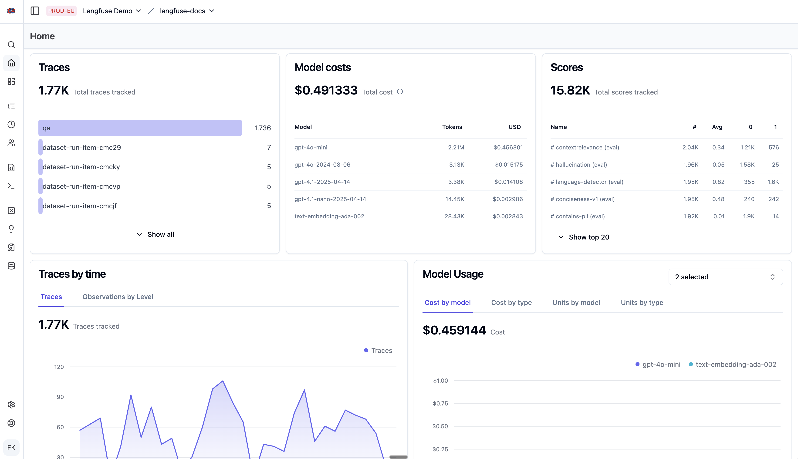
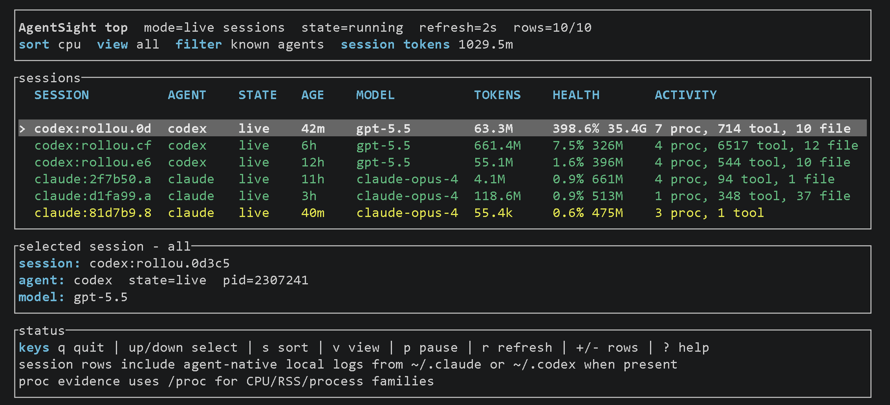
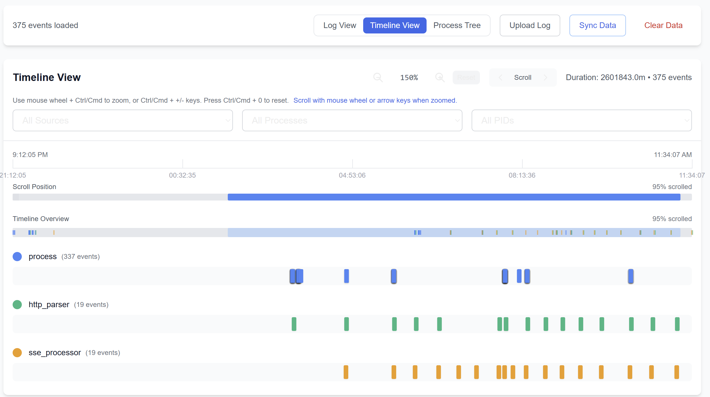
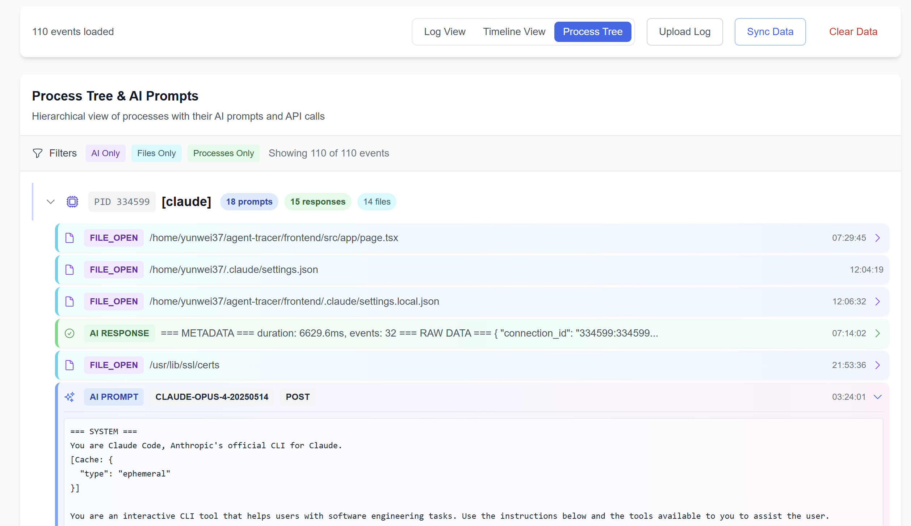
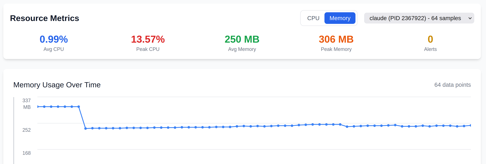

Rerun without a change
Tests or other commands rerun with no code or environment change.
computetime
The shortlist, described from real interfaces: the projects' own screenshots, their documentation and a running AI Observer. For each tool: what you see, how our goals map onto it, and what is missing.
Telemetry dashboard for coding agents
OpenTelemetry platform with a coding-agent section
LLM tracing with timelines and agent graphs
System-side view of agents through eBPF
solutions/Checked on 2026-10-09 · ratings from documentation unless markedTests or other commands rerun with no code or environment change.
A lead agent keeps calling its model while another agent works.
Frequent process polls or status messages without new information.
A wait or blocker on the path to delivery.
High resource use without a successful outcome.
Every rating in this deck uses one scale: ✓ visible in the tool's standard views · ~ needs a custom query or manual correlation · ✗ the data is missing.
TRACEPARENTSpan names from the Claude Code monitoring docs. Bar lengths are illustrative, not measured.
CLAUDE_CODE_ENHANCED_TELEMETRY_BETA=1; subagent spans carry agent_id and parent_agent_id.TRACEPARENT, so a test runner can join the trace.token.usage by type: input, cacheRead, cacheCreation, output.[otel]: events for API requests, prompts, tool approvals and results.turn.token_usage: input, cached_input, output, reasoning_output.| Agent OTLPmetrics, logs, traces | Session files~/.claude, ~/.codex | Agent hooksplugins, Stop hook | Kernel eBPFTLS, exec, files | Host and processes/proc, collector | What it can see | |
|---|---|---|---|---|---|---|
| AI Observer | serve mode | watch mode | — | — | — | Model calls, tokens, cost, tool calls. The two modes exclude each other. |
| OpenLIT | token deltas | openlit coding install | — | separate collector | Turns, tools, subagents, Git outcome; host and process metrics beside them. | |
| Langfuse | traces only | read by plugins | Claude Code, Codex, OpenCode | — | — | The agent's own steps in detail; nothing outside the agent. |
| AgentSight | —exports only | without root | — | root or CAP_BPF | Processes, files, LLM traffic and CPU of any command; not the agent's intent. |

12345run_task → run_turn → reasoning. Empty without OTLP traces.Seen on a running instance: every page was checked on 0.6.0 in Subyard (watch mode, Claude Code and Codex). Its screenshots are not published because they contain session data.
Bash calls are listed in the transcript, but there is no CPU, memory or process data.
Lead and subagent are separate sessions with no link between them.
Counts of tool calls per session; repetition is found by reading.
Timestamps and session duration; no view of gaps. Waterfall needs OTLP traces.
Cost per session; outcome only through proxies: commits, PRs, lines changed.
Input, cache read and write, output per agent. No per-model table.
Embedded prices for Claude, OpenAI, Gemini, Copilot.
CPU and memory only as Gemini CLI's own metrics.
Session → message → tool call. No subagent tree.
Claude Code, Codex, Gemini, Copilot; OpenCode via a third-party plugin.
One binary or container, local DuckDB. Already in Subyard.

1234
56From documentation. Not run yet.
The same test command twice gets a Loop badge. It compares arguments, not code; CPU is in a separate collector.
Subagent turns fold under the spawning chat; the timeline shows overlap. No “waiting” view.
Repeated identical calls are flagged in the list and on the session row, with tokens and cost wasted.
Wide spans in the timeline waterfall; waits are not labelled.
Cost and Outcome sit in the same table. Outcome is Git-based, not test results.
Per turn: input, output, cached, reasoning.
Configurable price table, separate from billing.
Collector exports host and per-process CPU and memory, without a GPU too. Not joined to sessions.
Session → subagent (parent id) → tool span.
Claude Code, Codex, Cursor, Windsurf. No OpenCode.
OpenLIT and ClickHouse containers plus a CLI. Content capture defaults to full.

1234
56From documentation. Not run yet.
Each test run is a tool span with its duration and command. No CPU, no code-change check.
Codex subagents nest under the spawning turn; repeated wait calls show as a counter.
The aggregated graph shows “step (n)”; no “no new information” check.
A long tool call is a wide bar. Waits between turns fall outside any trace.
Cost per trace and session; success needs a score that we define.
Usage types in separate buckets. Codex plugin: cached and reasoning.
Model price table with overrides.
Elapsed time per span only. No CPU, memory or processes.
Session → trace → generation → tool; subagents nested.
Plugins for Claude Code, Codex and OpenCode.
Six services: web, worker, Postgres, ClickHouse, Redis, S3.

1234agentsight top, terminal. Official image.
5
6
7/proc and session files.From documentation. Not run yet. record -- <command> saves a run to SQLite; report summarises it. The local tool is open source; a hosted app is in preview.
Each test process shows with CPU and memory under the agent that started it. No code-change check.
LLM traffic next to a running child on the timeline; links between agents are not modelled.
README names repeated model and tool calls and friction signals; how they show is not documented.
Gaps between events on the timeline; no wait label.
Tokens and CPU are there; the outcome is not recorded.
Input and output; cached and reasoning not documented.
No price calculation documented.
CPU and memory per process, process tree, files, network.
Process → child process, not agent → subagent → tool.
Any command; README names Claude Code, Codex, OpenCode.
Linux only. eBPF needs root or CAP_BPF; in Docker, a privileged container with the host PID namespace.
| AI Observer | OpenLIT | Langfuse | AgentSight | |
|---|---|---|---|---|
| Scenarios | ||||
| S1 Rerun without a change | ✗no process data | ~same-args loop | ~span duration | ~CPU per run |
| S2 Expensive waiting | ~separate sessions | ~timeline overlap | ~nested subagents | ~process timeline |
| S3 Polling | ~read transcript | ✓loop badge | ~graph counter | ~undocumented |
| S4 Long wait | ~timestamps | ~waterfall | ✓timeline | ~event gaps |
| S5 Spend without a result | ~Git proxies | ~Git outcome | ~own scores | ✗no outcome |
| Requirements | ||||
| Tokens without double counting | ~per agent | ✓per turn | ✓per call | ~in / out |
| Compute | ✗ | ~separate collector | ✗ | ✓per process |
| Attribution | ~no subagents | ✓ | ✓ | ~process tree |
| Cost estimate | ✓ | ✓ | ✓ | ✗ |
| Codex, Claude Code, OpenCode | ✓ | ~no OpenCode | ✓ | ✓ |
| Plain devcontainer | ✓one binary | ✓two containers | ~six services | ~needs root |
ccusage claude|codex|opencode daily prints token and cost tables from local session files, no server. Sniffly is a local web dashboard for Claude Code logs.
Send the agents' own OTLP to a general backend. Grafana Cloud has Claude Code and Codex integrations. S1–S5 dashboards are ours to build.
A proxy behind ANTHROPIC_BASE_URL logs tokens, cost and latency per request. It sees requests, not tools, subagents or processes.
Weave has a Claude Code plugin that traces turns, tool calls and subagents. Same class as Langfuse: no compute.
cAdvisor: CPU and memory per container. Tetragon: eBPF exec and exit events with the parent chain, so a test run traces back to the agent. Netdata: processes and cgroups.
Test and build caches key results on inputs. A cache hit, or a forced rerun, is a direct S1 signal that no observability tool infers today.
Sessions with loop badges, outcome and cost; host and per-process CPU and memory in the same ClickHouse.
Open: tying process metrics to a session is a custom SQL dashboard. No OpenCode.
Langfuse for the agent tree and timeline across all three agents; AgentSight for test processes, CPU and memory.
Open: two UIs correlated by time; eBPF needs root; Langfuse is heavy to host.
Claude Code traces and Codex OTel into a generic backend, with container or process metrics for compute.
Open: every S1–S5 view is a dashboard we write and maintain.
Zero setup. Daily and per-session token and cost tables to validate the totals of whichever tool we pick.
Open: tokens and cost only.
Coding-agent sessions, loop detection, outcome column, and a process collector in the same stack.
The only candidate that ties CPU, memory and test processes to an agent.
If OpenLIT's Claude Code, Codex or OpenCode coverage falls short.
solutions/, marked “tried”; log the choice in docs/decisions.md.